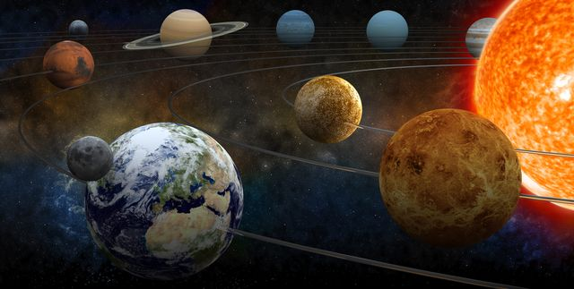

Attractors are patterns or behaviours that systems naturally settle into over time. They can be
thought of as a sort of "magnetic pull" that draws a system toward a specific state or set of
states. In everyday life, you might see attractors in the way a pendulum swings to a stop, or how
people form habits and routines.
